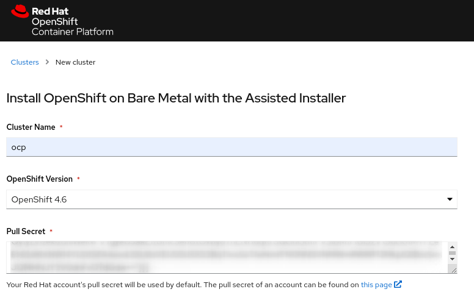
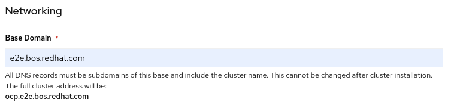
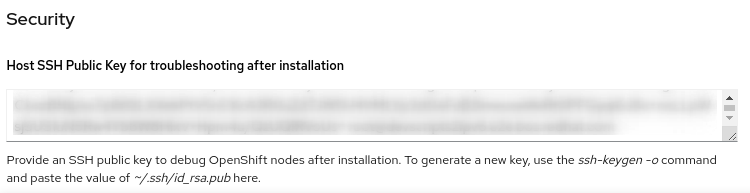
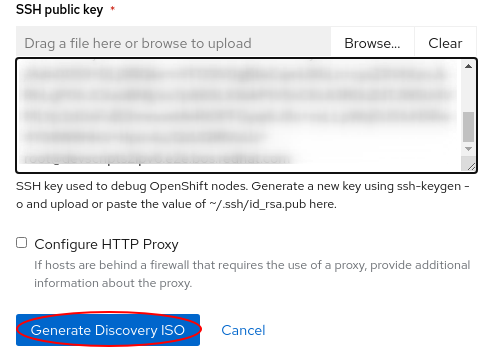
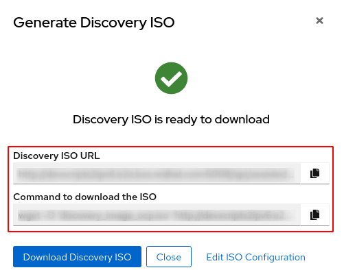
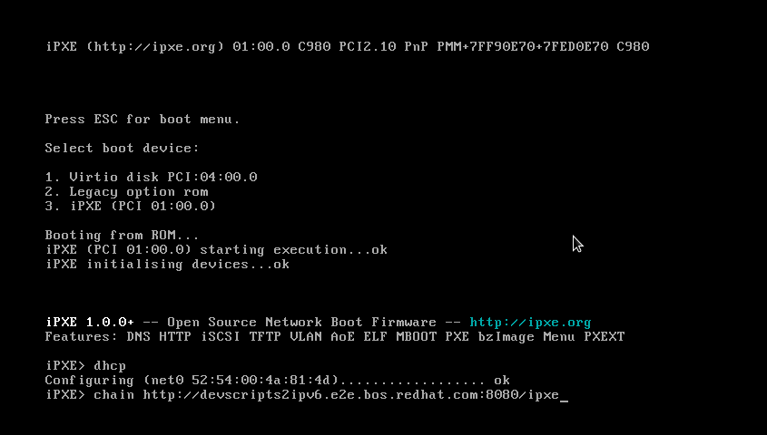
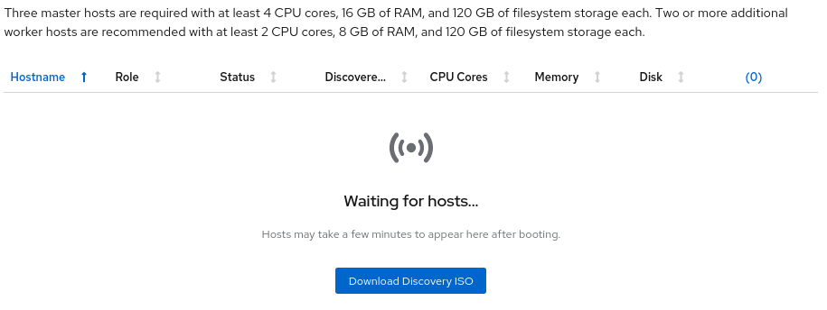
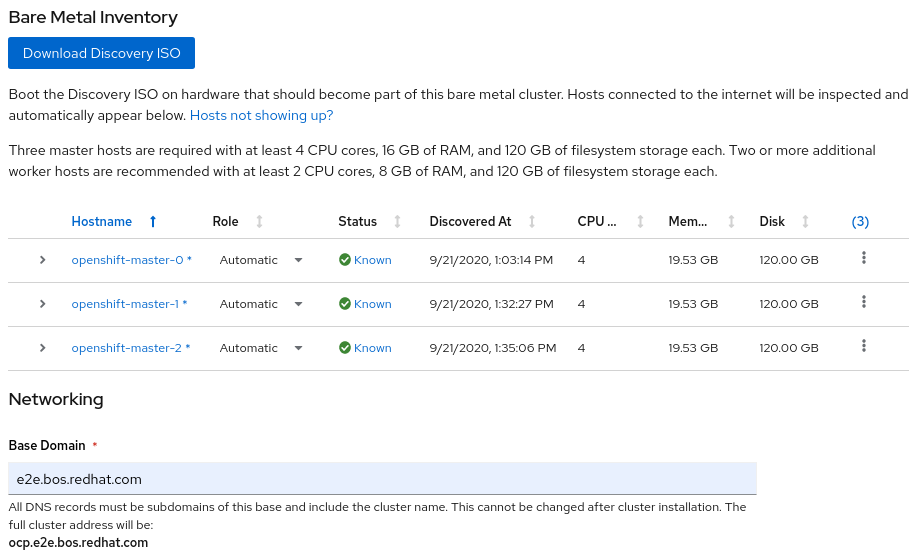
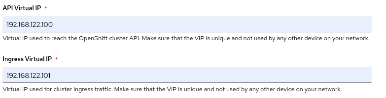

Openshift deployment with OAS - On Bare Metal
This guide contains all the sections regarding Bare Metal deployment method, like iPXE/PXE, VirtualMedia, etc... let's get started
General
This section is generic for the most of the cases:
- DHCP/DNS running on the network you wanna deploy the OCP cluster.
- Assisted Installer up & running (It's ok if you're working with cloud version).
- Typical DNS entries for API VIP and Ingress VIP.
- Pull Secret to reach the OCP Container Images.
- SSH Key pair.
Note: This method could be used also in Virtual environment
- With that we could start, first step is create the cluster
- Fill the Cluster name and Pull Secret fields, also select the version you wanna deploy:

- Now fill the Base Domain field and the SSH Host Public Key
 
- Click on Download Discovery ISO
- Fill again the SSH public key and click on Generate Discovery ISO

- Wait for ISO generation to finish and you will reach this checkpoint

iPXE
iPXE deployment method
NOTE1: We use a sample URL, please change to fit your use case accordingly NOTE2: We've set the live_url as the node hostname on 8080 port , please change to fit your use case accordingly
Automatic
The automatic way is done using podman, just follow this steps:
export IPXE_DIR=/tmp/ipxe/ai
mkdir -p ${IPXE_DIR}
# This command will download the ISO, extract the Images and create the ignition config files
podman run -e BASE_URL=http://devscripts2ipv6.e2e.bos.redhat.com:8080 -e ISO_URL=http://devscripts2ipv6.e2e.bos.redhat.com:6008/api/assisted-install/v1/clusters/33ffb056-ee65-4fee-91c9-f60e5ebea4a3/downloads/image -v /tmp/ipxe/ai:/data:Z --net=host -it --rm quay.io/ohadlevy/ai-ipxe
# This command will host the iPXE files on an podman container
podman run -v ${IPXE_DIR}:/app:ro -p 8080:8080 -d --rm bitnami/nginx:latest
To ensure if your container is working fine, check the url with a curl command
curl http://$(hostname):8080/ipxe/ipxe
Manual
The manual way is explained here. You need at least to have the Discovery ISO already generated
Now let's download that ISO in the provisioning machine, where the iPXE files will be hosted (use the Command to download the ISO button from the Assisted Service website
export IPXE_DIR=/tmp/ipxe/ai
export IMAGE_PATH=/tmp/discovery_image_ocp.iso
wget -O ${IMAGE_PATH} 'http://console.redhat.com/api/assisted-install/v1/clusters/<cluster_id>/downloads/image'
- Now we need to create the folder and the ipxe file definition
mkdir -p ${IPXE_DIR}
cat > $IPXE_DIR/ipxe << EOF
#!ipxe
set live_url $(hostname):8080
kernel \${live_url}/vmlinuz ignition.config.url=\${live_url}/config.ign coreos.live.rootfs_url=\${live_url}/rootfs.img ${KERNEL_OPTS}
initrd \${live_url}/initrd.img
boot
EOF
- We also need to extract the images from the ISO
export PXE_IMAGES=`isoinfo -i $IMAGE_PATH -f | grep -i images/pxeboot`
for img in $PXE_IMAGES; do
export name=`basename ${img,,} | sed 's/\;1//' | sed 's/\.$//'`
echo extracting $name
isoinfo -i $IMAGE_PATH -x $img > $IPXE_DIR/$name
done
- And as a last step, write the Ignition files for the deployment
echo writing custom user ignition
echo '{' > $IPXE_DIR/config.ign
isoinfo -i $IMAGE_PATH -x '/IMAGES/IGNITION.IMG;1' | xz -dc - | sed '1d; $d' >> $IPXE_DIR/config.ign
echo '}' >> $IPXE_DIR/config.ign
- After the Ignition files creation we need to host the files, for that we will use a podman contianer based on nginx
podman run -v ${IPXE_DIR}:/app:ro -p 8080:8080 -d --rm bitnami/nginx:latest
- To ensure if your container is working fine, check the url with a
curlcommand
curl http://$(hostname):8080/ipxe/ipxe
Booting the nodes from iPXE
- First step, we need to set up the boot mode on the iDrac's as
boot oncefor iPXE, this will depend on the steps on every Bare Metal Manufacturer/Version/Hardware. - When you are booting the nodes, stay tuned to press
crtl-bwhen the prompt say that:

- Now we need to get a correct IP and point to the right iPXE file
- And we just need to wait until the boot was finished, and the nodes start appearing on the Assisted Service interface


- Then we will modify the nodename to use a right name for Openshift

- Create another 2 more nodes and repeat this step

- Now fill the API Virtual IP and Ingress Virtual IP fields

- Now you just need to click on Install Cluster button and wait for the installation to finish.